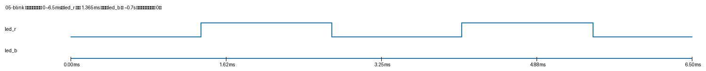
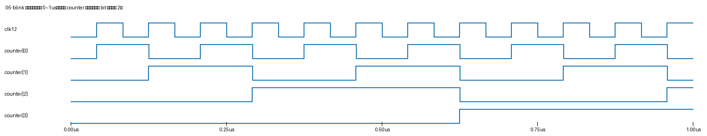

閃燈（blink）
用 Verilog 計數器讓 LED 週期性閃爍，並用 testbench 模擬驗證。
① 目的
② 程式
③ 波形
④ 結果
程式碼
// blink_tb.v（testbench）
reg clk = 0;
always #5 clk = ~clk;
wire led;
blink dut(.clk(clk), .led(led));
initial begin
$dumpfile("blink.vcd");
$dumpvars(0, blink_tb);
#1000000 $finish;
end
LED 閃爍
ON
12MHz 除頻 → 每秒切換
testbench 驗證
1. testbench 產生時鐘
2. iverilog 編譯 + vvp 執行
3. 產生 .vcd 波形檔
4. GTKWave 看波形
下方有實際波形圖
實際波形（iverilog + GTKWave，上方 clk、下方 led）


用上方按鈕切換章節（或 ← → 鍵）。
← 上一章
下一章 →
← 返回主頁